地政学
ルルドは国境都市ではないが、スペインに近いピレネー山麓で、欧州と世界の巡礼者を受け入れる。小都市が鉄道、空港、教会外交、医療支援、観光政策を通じて国際的な信仰ネットワークに接続する場である。実務でもある。
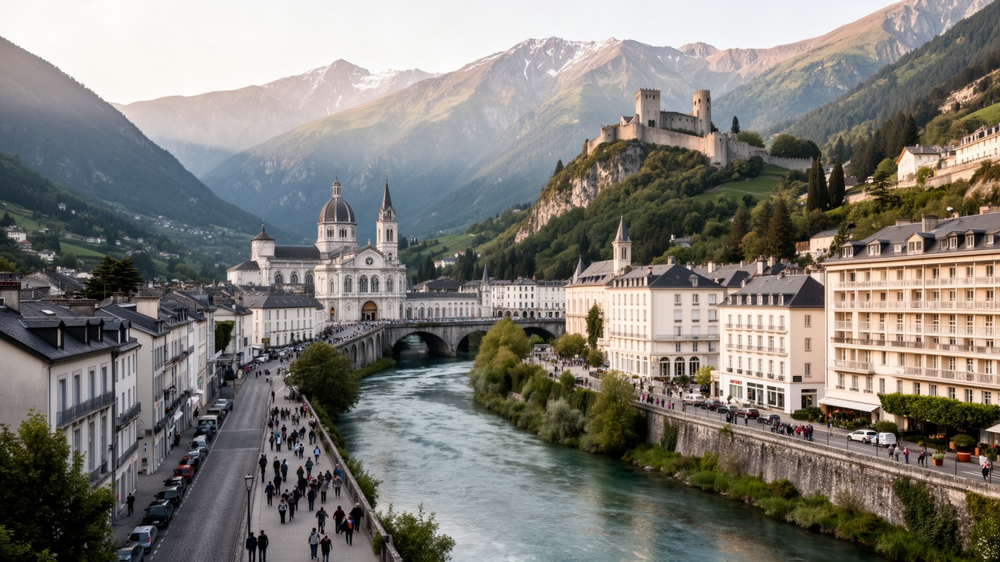
🇫🇷 フランス / オクシタニー地域圏 / World City Atlas
ピレネー山麓の小都市に、カトリック巡礼、病者の移動、宿泊と介助の経済、川沿いの洪水リスク、山岳観光、住民の日常が濃く重なります。
都市の骨格
ルルドは大都市ではありません。けれど聖域へ向かう人の流れ、ホテル街、鉄道駅、ポー川、城塞、周囲の山道が密接に結び、信仰と観光が生活の隣で動く世界的な巡礼都市です。
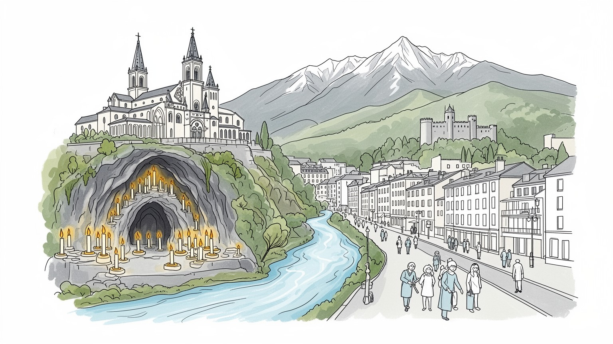
ルルドは国境都市ではないが、スペインに近いピレネー山麓で、欧州と世界の巡礼者を受け入れる。小都市が鉄道、空港、教会外交、医療支援、観光政策を通じて国際的な信仰ネットワークに接続する場である。実務でもある。
宿泊、飲食、土産物、交通、清掃、介助、医療的支援、聖域運営が雇用を作る。季節変動が大きく、巡礼者を迎える仕事は祈りの静けさの裏で長時間の現場労働と細かな配慮に支えられる街だ。地域経済の軸でもある。
洞窟、聖母出現の記憶、ミサ、ロザリオ、ろうそく、病者の祝福が都市の暦を作る。多言語の祈りが交わる一方、ベルナデッタの生活史や地域の教会文化も、信仰の場所を具体的に支えている。現在も続く営みである。
旅行者は聖域と城塞、川沿い、山の入口を歩くが、住民には空き店舗、貧困、季節雇用、洪水、住宅、学校、医療、交通が日常の課題になる。祈りの都市は同時に、普通の生活都市でもある。生活課題も重い街である。
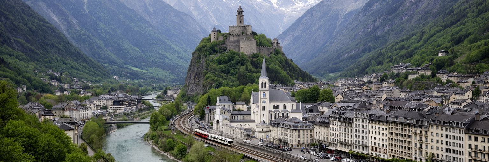
ルルドの都市形は、ポー川の谷、城塞の丘、聖域へ下る動線、ホテル街、鉄道駅、ピレネーへ向かう道路によって作られる。人口は小さいが、都市の尺度は住民数だけでは測れない。聖域へ向かう巡礼者、病者を支える介助者、団体バス、列車、タクシー、宿泊施設、食堂、土産物店が、季節ごとに街の密度を変える。川沿いの低地は祈りの中心であると同時に、豪雨や洪水の危険を受ける場所でもある。城塞から見下ろすと、信仰の空間、観光の空間、日常の住宅地、山へ続く道が狭い谷に重なっていることが分かる。ルルドを読むには、大聖堂の正面だけでなく、駅から聖域までの坂、車椅子が通る歩道、ホテルの搬入口、川の堤防、雨の日の避難動線まで見る必要がある。世界的な巡礼地は、壮大な象徴と細かな都市運営の両方で成り立つ。小都市であることは弱さではなく、祈りの距離を近くする条件にもなる。だが同じ近さは、混雑、洪水、騒音、季節雇用の不安を住民の生活に直接近づける。谷の地理はルルドの魅力であり、同時に都市計画の制約である。さらに、聖域と町の中心が近いことは、巡礼者と住民が同じ商店、同じ橋、同じ駅前を使うことを意味する。世界から来る人の流れは、地方都市の日常を外へ開く力であり、静かな住宅地にまで国際的な移動の影響を及ぼす。山と川の近さも常に効く街。
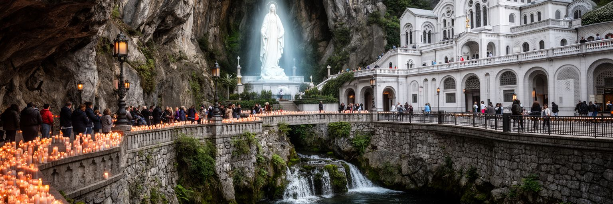
ルルドの中心には、一八五八年にベルナデッタ・スビルーが聖母を見たとされるマサビエルの洞窟がある。洞窟は大きな建築物ではなく、岩肌、水、祈りの沈黙、ろうそくの列が集まる小さな場所である。その小ささが、逆に世界中の巡礼者に個人的な近さを感じさせる。上に重なる大聖堂群、広場、地下聖堂、行列の道、告解の場所、水に触れる場所は、記憶を受け入れるための都市装置になっている。聖域は観光名所である前に、病気、喪失、感謝、回心、家族の願いを持つ人が時間を置き直す場所である。多くの言語で祈りが唱えられ、団体ごとの旗や車椅子の列が動くと、信仰は抽象的な教義ではなく、身体の移動として見えてくる。ルルドの宗教性を読むには、奇跡の物語だけでなく、祈る人を受け入れる順路、静けさを保つ係員、清掃、警備、医療的な配慮を見る必要がある。神聖な場所は、日々の管理と奉仕に支えられて初めて開かれる。洞窟の記憶は過去に閉じず、毎日の祈りで更新される。そこにルルドの都市としての持続力がある。ベルナデッタの貧しい家庭環境を知ると、聖域の物語は壮麗な建築だけではなく、弱い立場の人の声が世界へ届いた記憶として読める。だから洞窟の前では、個人の願いと社会的な弱さが静かに結びつく。聖域の静けさは、記憶を急がせず、訪問者が自分の時間で祈れる余白を守っている。
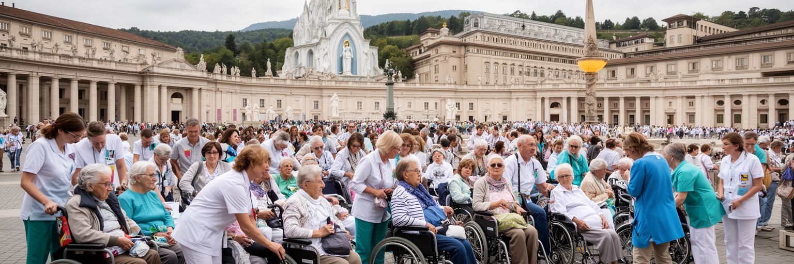
ルルドの巡礼を特徴づけるのは、病者、高齢者、障害のある人が中心的な存在として迎えられる点である。多くの巡礼地では健康な旅行者の動きが基準になりがちだが、ルルドでは車椅子、ストレッチャー、介助者、医療ボランティア、看護師、家族、聖職者が同じ広場を使う。祈りは歩ける人だけのものではなく、移動の助けを必要とする人の身体を前提に組み立てられる。聖域周辺の幅のある通路、段差への配慮、団体の集合場所、救護体制、宿泊施設の受け入れは、信仰の実践を都市の福祉に変える。もちろん、介助は美しい物語だけではない。長時間の待機、疲労、感染対策、言語の違い、医療的リスク、費用、家族の不安がある。癒やしを語る都市は、病気が治るかどうかだけでなく、弱さを持つ人が尊厳を保って移動できるかで評価されるべきである。ルルドの重要性は、病者を例外ではなく、都市の中心に置く点にある。介助する人もまた支援を必要とし、休憩、宿泊、食事、情報がなければ奉仕は続かない。祈りの背後には、ケアを支える現実の労働と細かな調整がある。都市全体が介助を前提に動く時、段差、待合室、トイレ、食堂、案内の一つ一つが信仰の質を左右する。ルルドは、弱さを持つ人を歓迎する理念が実際の設計に変わるかを試す場所でもある。その経験は他の観光都市にも学びを与える。
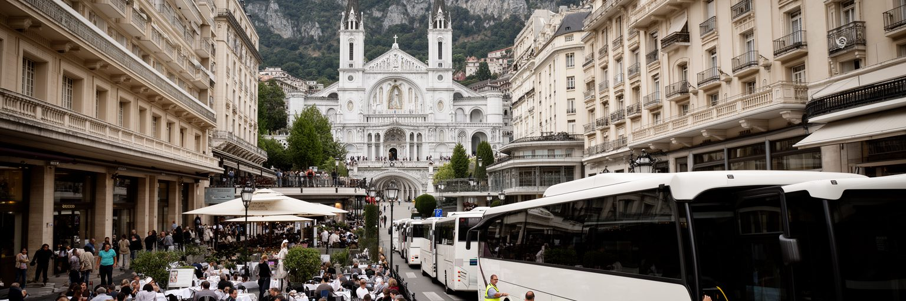
ルルドの経済は、巡礼と宿泊を中心に組み立てられてきた。聖域へ近い通りにはホテル、食堂、カフェ、土産物店、旅行会社、団体バスの停車場所が集まり、人口規模を大きく超える受け入れ能力を持つ。巡礼シーズンには客室清掃、調理、配膳、洗濯、予約管理、通訳、運転、警備、修繕、仕入れが一斉に動き、街の時間が団体旅行の到着と出発に合わせて変わる。けれど宿泊経済は安定だけをもたらすわけではない。季節変動、感染症、国際旅行の不調、宗教団体の高齢化、交通費の上昇は、店と雇用を大きく揺らす。INSEEの統計にも、サービス業の比重、失業、貧困の高さが表れる。祈りの場所としてのルルドを支える人の多くは、宗教的な感情だけでなく、賃金、勤務時間、家族の生活、店の存続と向き合う。巡礼者が静かに過ごせるのは、裏側で働く人が部屋を整え、食事を出し、荷物を運び、道案内をするからである。観光都市を読む時は、訪れる人の感動だけでなく、迎える人の労働条件も見なければならない。宿泊の灯りは街の生命線であり、同時に経済の脆さを映す指標でもある。団体旅行が減る年には空室が増え、若い働き手は別の町へ移る。逆に巡礼が戻る年には人手不足が起きる。需要の波をどうならし、通年の仕事を作るかが、ルルドの社会政策の課題になる。街の将来にも直結する事柄。
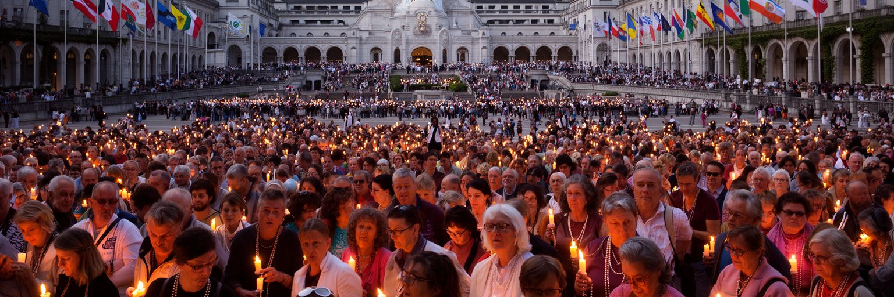
ルルドでは、フランス語だけでなく、イタリア語、スペイン語、英語、ポーランド語、ドイツ語、ポルトガル語、アジアやアフリカの言語が日々交わる。聖域のミサ、ロザリオの行列、歌、告解、案内、ホテルの受付、医療支援は、多言語の調整なしには成り立たない。巡礼者は同じ聖母への祈りを共有しながら、それぞれの国の教会文化、家族の事情、病気の経験、旅費、宗教教育を持ち込む。多言語性は国際都市の華やかさというより、祈りを実際に届けるための作業である。言葉が通じなければ、集合時間、体調不良、食事制限、告解の希望、車椅子の移動、迷子への対応が難しくなる。ルルドの普遍性は、すべてを一つに溶かすことではなく、違う言語と習慣を持つ人が同じ場所で祈れるように整える力にある。聖域の国際性は大都市の移民街とは違うが、他者を迎える技術という点では共通している。祈りの言葉が分からなくても、行列の速度、手を貸す動作、沈黙の共有は理解される。言語を超える場を作るには、結局、翻訳、案内、奉仕、忍耐という具体的な仕事が必要になる。ルルドの多言語性は、信仰を日常の運営へ結びつける力である。巡礼団の旗や歌は出身地の違いを示すが、同じ広場で待ち、同じ雨を避け、同じ坂を上る経験が共同性を作る。多様性は標語ではなく、時間割と動線の調整として現れる。
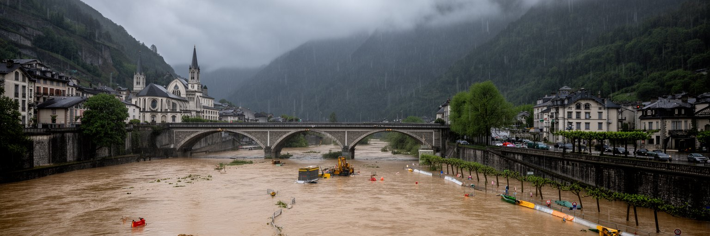
ルルドの聖域は水の記憶と結びついているが、都市にとって水は恵みだけではない。ポー川は谷を形作り、橋と遊歩道に美しい景観を与える一方、強い雨や山からの流れで増水し、聖域、ホテル街、道路、地下施設に危険を及ぼすことがある。二〇一三年の大きな洪水は、巡礼都市が自然の力にどれほど近いかを示した。川沿いの低地に祈りと宿泊の中心があるため、防災は行政だけでなく、聖域運営、ホテル、交通、医療支援、巡礼団の計画に関わる。高齢者や病者が多く訪れる都市では、避難の速度、情報の多言語化、車椅子の動線、薬や医療機器の管理が特に重要になる。気候変動で豪雨が激しくなるほど、ルルドは水の霊性と水害への備えを同時に考えなければならない。川は都市の象徴であり、危険の通路でもある。美しい水辺を保つには、堤防、排水、警報、避難訓練、建物の復旧力を地道に整える必要がある。祈りの静けさを守ることは、災害時に弱い人を置き去りにしない都市を作ることでもある。水をめぐる信仰と防災は、ルルドでは別々の話ではない。川の近さが、都市の責任を日々問い続けている。復旧には建物の修理だけでなく、巡礼の予定変更、宿泊予約、雇用、寄付、保険、交通の再開が絡む。水害は自然災害であると同時に、信仰経済と地域生活の連鎖を揺らす出来事である。備えは日常の仕事になる。
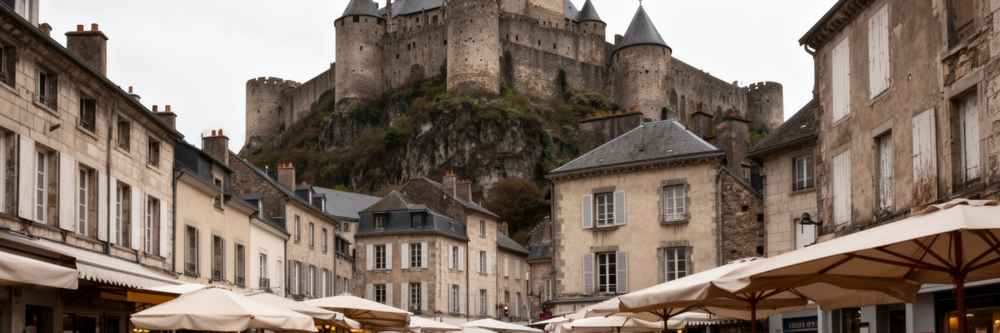
ルルドは聖域だけの都市ではない。城塞の丘、旧市街の通り、市場、学校、住宅、公共施設、地元の教会、川沿いの散歩道には、巡礼シーズンとは違う日常の時間が流れる。城塞は観光名所であると同時に、ピレネー山麓の歴史、地域の防衛、町の眺望を伝える場所である。住民にとっては、聖域へ向かう人の流れが収入を生む一方、交通規制、混雑、空き店舗、季節雇用、家賃、若者の進学や就職先といった課題もある。観光の中心から少し離れると、地方小都市としての悩みが見える。高齢化、医療、商店街の維持、公共交通、住宅の改修、学校の規模、貧困対策は、宗教都市の看板だけでは解けない。ルルドを理解するには、聖域で祈る人と、毎日ここで暮らす人の視線を重ねる必要がある。城塞から街を見下ろすと、ホテルの密度と住宅地の静けさが隣り合う。世界中から人が来る都市であっても、住民の買い物、通学、通院、役所の手続きは地元の条件に縛られる。巡礼の経済が日常を支えながら、日常の多様さを狭めることもある。その緊張を読むことが、ルルドを単なる聖地の絵葉書にしないための入口である。町の子どもにとって聖域は世界の入口である一方、通学路や家族の働き口にも関わる現実の場所である。住民の生活を見れば、巡礼都市の持続性が観光収入だけでは測れないことが分かる。今もだ。
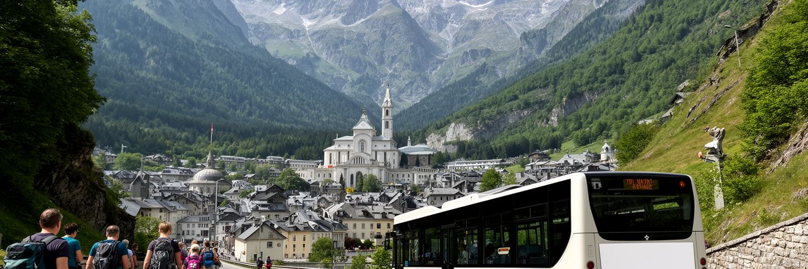
ルルドは聖域の町であると同時に、ピレネー山地への入口でもある。周囲には谷、峠、温泉地、スキー場、ハイキング道、村落景観が広がり、巡礼の滞在と山岳観光を組み合わせる旅行者もいる。山の近さは、都市に美しい背景を与えるだけでなく、交通、天候、雇用、食文化、防災を形作る。鉄道や道路は、トゥールーズ、タルブ、ポー、スペイン方面、山間の観光地を結び、ルルドを地域移動の結節点にしている。山岳観光は宿泊日数を伸ばし、地元の食材や工芸、ガイド、交通事業に需要を生むが、車依存、季節集中、自然環境への負荷も増やす。冬の雪、春の増水、夏の熱、秋の雨は、巡礼者と登山者の両方に影響する。ルルドをピレネーの文脈で読むと、聖域だけでは見えない地域経済が見えてくる。山の村から働きに来る人、ホテルで山の情報を尋ねる人、バスで温泉地へ向かう人が、祈りの都市に別の流れを加える。信仰の旅と自然の旅は目的が違うが、同じ駅、同じ宿、同じ道路を使う。山麓都市としてのルルドは、精神的な休息と身体的な移動を同じ谷で受け止める場所である。ピレネーの存在が、街の空気と経済に奥行きを与えている。山岳地域では天候の急変や交通の細さが旅程を左右するため、都市の案内力も重要になる。聖域だけで完結しない滞在を促すことは、周辺の村や自然を守りながら地域全体へ利益を広げる試みでもある。
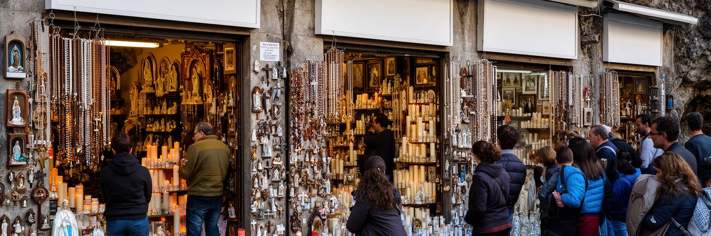
ルルドでは、祈りと商業の距離が非常に近い。聖域の外にはロザリオ、ろうそく、メダイ、聖水容器、絵葉書、像、土産物を扱う店が並び、巡礼者は記憶を持ち帰る品を選ぶ。こうした商業は、信仰を軽くするものとして批判されることもあるが、同時に店主、職人、卸売、販売員、家族経営の生活を支える現実の経済でもある。問題は、商業そのものの有無ではなく、祈りを尊重し、弱い立場の訪問者を利用せず、街の品位と雇用をどう両立させるかである。巡礼者にとって小さな品物は、病気の家族への贈り物、旅の証し、祈りの継続を助ける道具になる。けれど過度な販売圧力や安価な大量商品が前面に出ると、場所の静けさは損なわれる。ルルドの商店街を読むことは、神聖な体験がどのように市場と接し、どこで緊張を生むかを見ることである。観光都市は、記憶を商品に変えずには成り立ちにくい。だからこそ、何を売るか、どのように売るか、誰の仕事を守るかが重要になる。信仰の尊厳と商業の生活基盤を対立だけで見るのではなく、互いの限度を保つ都市の作法が求められる。ルルドの土産物店は、その難しい均衡を毎日試されている。販売の通りは、訪問者が感動を形にしようとする場所であり、同時に地元経済の最後の接点でもある。商業を完全に否定すると、街で働く人の生活も見えなくなる。今も。
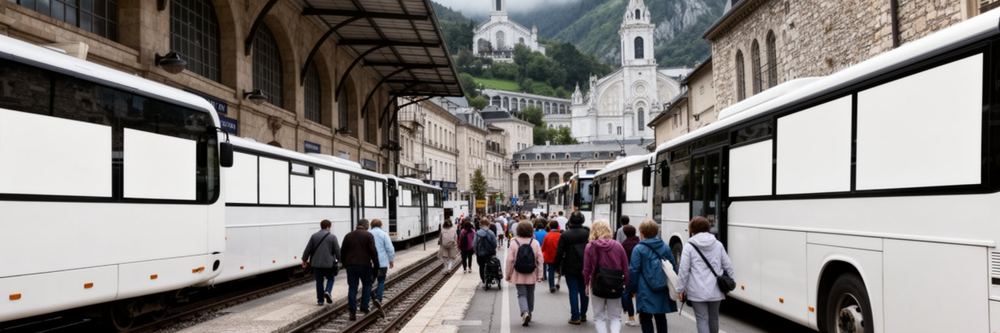
ルルドへの到着は、巡礼体験の大切な一部である。鉄道駅に降り、バスやタクシーに乗り、ホテルへ荷物を預け、聖域へ向かう道を歩く過程で、訪問者は日常の時間から祈りの時間へ移る。団体巡礼では、車椅子の移動、荷物、名簿、食事、ミサの予定、集合場所、体調確認が細かく管理される。空港や長距離バスから来る人も多く、都市は小さいながら国際的な到着動線を持つ。交通は単なる移動手段ではなく、弱い人を安全に迎える仕組みである。歩道の幅、坂の勾配、信号、バス停、ホテルの入口、夜間照明、案内表示、多言語対応は、巡礼者の安心を左右する。到着が混乱すれば、祈りの前に疲労と不安が増える。ルルドの都市運営では、駅から聖域までの数百メートルが大きな意味を持つ。そこには観光バス、地元住民の車、配送、救急、歩行者が交差し、シーズンには街の容量が試される。良い巡礼都市とは、壮麗な聖堂を持つだけでなく、疲れた人が迷わず休み、助けを求められる都市である。到着の動線を読むと、ルルドの信仰が具体的な交通と介助によって支えられていることが見えてくる。旅の始まりを整えることが、祈りの場を開く第一歩になる。反対に、出発の日もまた重要である。巡礼者が持ち帰る記憶は、駅前の混雑、ホテルでの別れ、最後に見た川や山の風景と結びつく。移動の終わりまで含めて、ルルドの都市体験は形作られる。
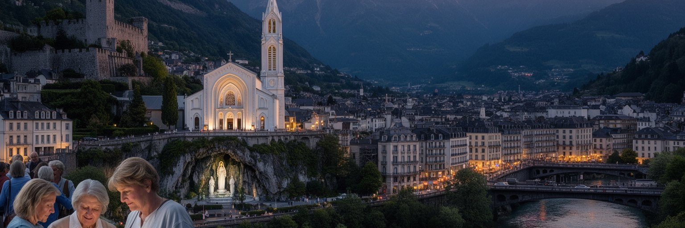
ルルドを読む時、最初に見えるのは洞窟と大聖堂、ろうそく、巡礼者の列である。だがこの街の重要性は、奇跡の物語だけでは説明できない。小さな地方都市が、病者の尊厳、多言語の祈り、宿泊経済、季節労働、商店街、洪水リスク、山岳観光、住民の日常を同時に抱えていることにこそ、ルルドの現代性がある。世界中から人が来る場所でありながら、人口は少なく、失業や貧困、空き店舗、公共サービスの維持という地方都市の課題も見える。聖域の普遍性は、地元の労働、介助、清掃、交通、翻訳、宿泊なしには成立しない。祈りは目に見えないが、それを支える都市の仕組みはきわめて具体的である。ルルドの価値は、信じる人にとっての聖性だけでなく、弱さを持つ人が中心に置かれる都市空間を作ってきた点にもある。もちろん、その空間は商業化、混雑、災害、経済依存という矛盾を抱える。だからこそルルドは、宗教都市を理想化せずに読むための重要な場所である。祈り、労働、商業、福祉、自然リスクを同じ地図に置くと、ルルドは小さな聖地ではなく、世界の願いと現実の生活が交わる都市として立ち上がる。大都市の力とは違うが、弱い人を迎える都市の力を考える上で、ルルドは特別な教材になる。祈りの場が地域の生活を支え、同時に負担も生むという複雑さを見れば、聖地と町を分けずに読む必要がある。